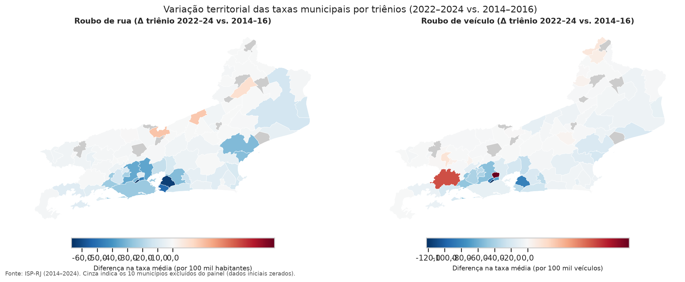

Pergunta 1: Como Evoluíram as Taxas Médias no Estado?

Roubo de Rua: cai de 13,99 para 6,15 por 100 mil hab. (−56,0%).
Roubo de Veículo: cai de 20,78 para 8,80 por 100 mil veíc. (−57,7%).
• Picos em 2016 (20,89 em rua) e 2017 (28,07 em veículos) durante a crise fiscal estadual.
• Queda acentuada a partir de 2020 (pandemia) e consolidação em patamar baixo.
• 2014–16 vs. 2022–24: queda de 17,99 para 7,83 (−56,5%) em rua e de 24,01 para 9,68 (−59,7%) em veículos. Corrobora a Hipótese 1.
Pergunta 2: Trajetórias Regionais das Taxas Médias

• Capital pontual: 40,71 (2014) → 41,96 (2024), saldo de +3,1%.
• Por triênios: caiu de 46,26 para 36,03 (−22,1%). A aparente alta pontual decorre do repique de 2024 (+37,1% sobre os 30,60 de 2023), e não de tendência decenal de elevação.
• Baixada Fluminense: caiu de 71,96 para 25,05 (−65,2%).
• Grande Niterói: caiu de 57,69 para 23,04 (−60,1%).
• Interior: caiu de 8,06 para 1,89 (−76,6%).
Em 2024, a Baixada Fluminense manteve a maior taxa média (23,18), superando Capital (19,41), Grande Niterói (15,36) e Interior (2,73).
Pergunta 3: Maiores Diferenças Absolutas por Município


• Roubo de rua: 65 quedas pontuais (78 no triênio); 12 aumentos; 5 estáveis.
• Roubo de veículo: 65 quedas pontuais (69 no triênio); 7 aumentos; 10 estáveis.
• Queda simultânea em ambos: 56 cidades no ponto a ponto.
• Taxa média subiu de 95,78 para 113,22 (+17,45 pts pontual) e de 88,68 para 94,09 (+5,41 pts no triênio).
• Na série histórica completa, o pico foi em 2017 (178,74); 2024 recuou frente ao ápice, mas ainda encerrou acima de 2014.
Em contraste, vizinhos metropolitanos registraram forte alívio: Nilópolis (−93,98 pts) e São Gonçalo (−74,68 pts).
Pergunta 4: A Distância entre os Municípios Diminuiu?

• Roubo de rua: P90 caiu de 41,12 para 18,43 (−55,2%).
• Roubo de veículo: P90 caiu de 58,84 para 20,43 (−65,3%).
Ressalva: como P10 é frequentemente nulo, o estreitamento decorre do rebaixamento do teto (P90).
• CV Estadual: rua subiu de 1,65 para 2,12 (+28,8%); veículos subiu de 1,81 para 3,11 (+71,5%).
• CV Metropolitano (ISP): veículos subiu de 0,63 para 0,91 (+44,1%).
• Índice de Gini: rua subiu de 0,72 para 0,75; veículos subiu de 0,70 para 0,80.
As 8 maiores cidades (10% dos municípios) concentram 59,9% dos roubos de rua (era 52,9%) e 69,4% dos de veículos (era 51,7%).
Pergunta 6: Perfis Mensais Médios e Efeito Regional

Taxas diárias (divididas pelos dias de cada mês); índice 100 = média anual de cada município.
• Pico no verão: janeiro atinge 123,9 no painel estadual e 118,2 no núcleo metropolitano.
• Vales no inverno: ponto mais baixo ocorre em julho (80,1 no painel e 88,6 na área metropolitana).
• Painel estadual: pico em fevereiro (118,1).
• Núcleo metropolitano: fevereiro é de apenas 102,6; o perfil oscila discretamente entre 94,6 (outubro) e 103,9 (maio). O pico estadual reflete o Interior.